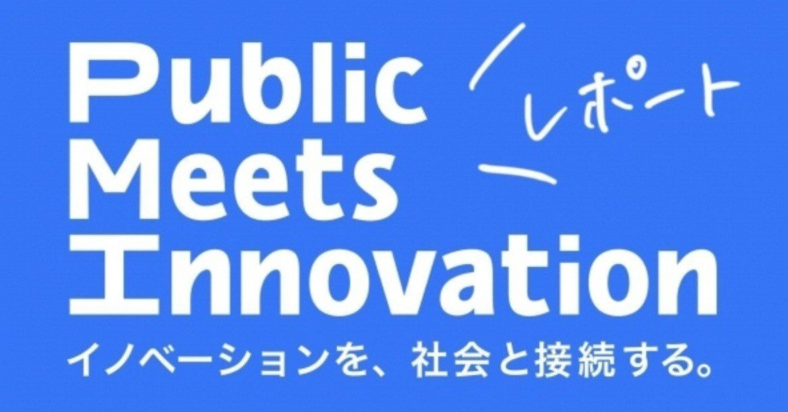

イノベーターに知ってもらいたいイノベーションとルールメイキングに纏わる情報をお届けする【Public Notes】
PMIでは「イノベーションと公共」をテーマに定期的な勉強会やイベントを開催しています。今回は「公共政策学」の観点からイノベーションの社会実装について考えていきます。
1 秋吉先生を囲んでの公共政策勉強会
今回は「公共政策学」の専門家である秋吉貴雄先生をお招きして、どのようにして「政策」ができるかを学問的に教えていただきました。本来なら6時間分の講義を、ぎゅっと1時間半にまとめた勉強会の様子は、PMIメンバーから多くの質問もあり、まさに「白熱教室」...！前半は、そんな勉強会のうち、秋吉先生からの講義内容を中心にレポートしていきます。
２ 講義
（１）公共政策学とは
そもそも「公共政策」と聞いて、皆さんはどんなイメージを持たれるでしょうか？
「公共政策」とは、政策問題を解決するために、社会全体、あるいは政治が採る行動方針・行動案のことをいいます。そして公共政策学とは、そんな公共政策を研究対象とする学問で、大学では総合政策学部などに振り分けられます。
中でも、公共政策学の研究対象は大きく2つの知識に分けられます。①「ofの知識」という、「政策形成が、誰にどのようになされるのか」という政策づくりのプロセスに必要な知識と、②「inの知識」という、政策問題に関する合理的判断を行うのに必要な知識です。今回は①「ofの知識」を取り上げ、政策形成のプロセスに焦点をあてていきます。
（２）政策形成における7つのプロセス
政策づくりは、A：政策問題の発見・定義、B：政策アジェンダの設定、C：政策案の設計、D：政策の決定、E：政策の実施、F：政策の評価、G：政策の終結という7つの段階モデルに分けられます。今回は、このうちA〜Dについて説明していきます。
A：政策問題〜いかに発見され、定義されるのか
▼政策問題
政策問題とは 政策問題とは、私的ではなく、社会で解決すべき社会的問題と認識された問題です。
「解決すべき」とみんなが認識するきっかけの例としては、人が亡くなるような重大事件や最近だと、飲酒運転による死亡事故などのニュース、少子化・空き家率に代表される社会指標の変化や、専門家による調査・分析から、「消滅可能性都市」などの衝撃的なワードが話題になること、また著作権法改正等の司法判断などが挙げられます。
ここで重要なのが、問題それ自体の定義の仕方。上で挙げたような問題の状況そのものが政策における問題となるのではなく、社会に「これは社会的に解決すべき問題だ」と認識・定義されてはじめて政策問題になるのです。私的な問題ではなく、公共性を持った問題だと認識されることでアジェンダに載り、そのアジェンダに載ってこそ、初めて次のステップに移ることができるのです。
▼フレーミングの大切さ
アジェンダに載せるために、まず「いかに社会から認識されるか」という視点が大切ですが、ここでポイントとなるのが「フレーミング」です。問題の枠組みの設定を、問題を提起する側が工夫することで、社会からの認識やその後の議論の方向性が決まります。
PMIのBIG PICTURE BOARDである齋藤貴弘弁護士が主導した風営法改正の流れを振り返ると、規制の問題を「ナイトクラブの活性化」という切り口ではなく、観光による経済活性という意味合いをより全面的に想像できる「ナイトタイムエコノミー」をフレームにしています。その結果、音楽業界なども巻き込むことができ、観光政策に関心のある民間・政治家も巻き込むことができたといえます。
その他にも、「少産少子化政策」から「産み育てる少子化政策」への枠替えが挙げられます。「少産」という言葉だと、子どもを産む主体である女性の問題であるという認識を作りかねないためです。
フレーミングは、こうした政策問題の名前付けなどといった工夫を中心にその問題を印象付けます。そしてその印象が、賛同してくれる職業層や政治家からの支持に影響し、「課題を解決しよう」という台風の風向きや円周を変えていきます。こうした政策問題の枠組み設定こそが、政策形成におけるスタートラインなのです。
B：政策アジェンダの設定
▼アジェンダとは
アジェンダ（課題、議題）に載るということは、政策問題が社会的な論点になり、民間・政治における検討課題のリストに載ることをいいます。 アジェンダは、①「公衆アジェンダ」という、マス・メディアが報道するなどして、一般大衆が注目する課題と②「政策アジェンダ」という、政策決定に関与する政治内部のアクターが注目する課題に分かれます。
▼アジェンダの変化
政策形成の過程では、上で紹介した「公衆アジェンダ」「政策アジェンダ」、2つのアジェンダが揺れ動きながら課題解決へ進んでいきます。重大事件をメディアが報道して課題になり、それが政治でも政策問題として取り上げられるという、公衆アジェンダから政策アジェンダに載るパターンが一般的です。
しかし、ものによっては、政治の動きによってメディアの報道が増加することで社会に問題が認識されるという、政策アジェンダから公衆アジェンダとなるものもあれば、そこから社会で揉まれた議論がまた政治に引き戻され、補強されて政策アジェンダとなるというサイクルが生まれるパターンもあります。
▼アジェンダに載らない政策決定
最近注目されているのが、こうしたパターンに当てはまらずに政策決定がなされているものです。つまり、公衆の関心が低くて公衆アジェンダに載らないパターンです。これは、特定業界を除いて一般に知られないまま政策議論が進んでいることを意味します。
また、特定の課題がアジェンダに載るのを利益団体や政治文化が妨害するパターンもあります。例えば、特定の利益団体がメディア等に圧力をかけて公衆の課題認識の機会を失くそうとすることや、票に繋がりにくい国民の関心がない課題について、政治家が敢えて政策アジェンダに載せないという選択を採ることなどが挙げられます。こうしたパターンは実際に多く存在しており、政策問題になりうる課題が注目された瞬間にその認識を上げていかなければ、その課題は消えていってしまうことを意味します。会期が来て通らなかったアジェンダ、話題になっていないアジェンダは過去にたくさんある一方で、一定期間注目が薄らぎつつ、また同様の課題が浮上するというサイクルを繰り返すアジェンダも存在します。いじめ問題や自然災害がその例で、複数回に渡り定期的に話題になることでアジェンダとしての性格が変化していくものです。
このように、アジェンダ設定とは、公衆と政治で相互に影響し合いながら政策問題を議論していく中で進むものであり、それこそが「アジェンダに載る」ということの意味なのです。
C：政策の設計 〜解決策を考える
政策の設計においては、実現する際とその後にとって、多様な意見の反映・調整がポイントとなります。多様性を確保するために、意見収集を行うそう層と機会に着目してみると、そのセクターは①専門家・業界、②官邸、③与党・政治家、④市民に分けられます。
①専門家・業界は、審議会・私的諮問機関や、いわゆるロビイストも含まれます。「学者はできるといっても現場はできないと言う」というような事象に対し、理論知と現場知を交差させた、政策問題に関する知識の共有とコミュニケーションが、調整として重要になります。②官邸は、閣僚を率いて、政策の実効的な実現に向けたイニシアチブを取る存在であり、例として医薬品インターネット販売規制が挙げられます。③与党・政治家は、政務調査会部会、議員連盟なども含まれます。立法や制度改革に繋げる際は、政治内部の属人的な政策ノウハウに対し、いかにアプローチしていくかが重要となります。④市民は、審議会や公聴会、パブリック・コメントなどの機会を通じ、一般社会おける常識知との照合や、新たな視点を獲得することで政策設計を充実させていくことができます。
D：政策の決定
政策の設計までできれば、いよいよ政策決定というプロセスに移ります。実際に政策決定を行う主体は、フォーマル・アクターと呼ばれる担当部局（官僚）、政治家と、インフォーマル・アクターと呼ばれる利益団体、専門家、メディア、（市民）に分けられます。その際、決定主体に対して影響を与える要素は、①利益（interests）②制度（institutions）③アイディア（ideas）の「3つのＩ」です。
特に、②制度（institutions）については、制度が規制として働くことで、影響を及ぼすことが多いです。例えば、選挙によって政治家の行動が左右されたり、過去の政策が足かせとなって変化を起こせないなど、アクターを取り巻く環境が制約となって、アクターの政策決定に至る意思形成に影響を及ぼすのです。また、③アイディア（ideas）については、発案という意味での「アイディア」ではなく、理念や信念といった、心理状況としての意味合いで用いられており、過去と同じ選択を繰り返すことでリスクを取る不安を減少させるという道義的な信念が、合理的な判断よりも優先されるというような形で政策決定に際した意思形成に影響を及ぼします。これは、政策決定に関わらず、社会一般に見られるもので、例えば多くの組織がピラミッド型の官僚制を採用していることが挙げられます。学校でも会社でも、それを組織する客体や環境は大きく異なるのに、それを採用しがちであるということは、社会通念という「アイディア」に基づく意思形成の表れです。
（３）まとめ
以上のA～Dの各プロセスを経て、政策は実施・評価・終結に向かっていきます。より深く勉強されたい方は、ぜひ、秋吉先生のご著書「入門 公共政策学」、「公共政策学の基礎［新版］」をご覧になってみてください。
3 後編へ
続く後編では、秋吉先生の講義から生まれたPMIメンバーからの質疑応答を中心としたフリーディスカッションの様子について共有していきます。この勉強会で学んだポイントが、PMIの考えるパブリックイノベーションにどのように繋がっていくのか、ぜひ、次の更新もご注目ください！
記： 八村美璃
現在法科大学院に通うPMIインターン生